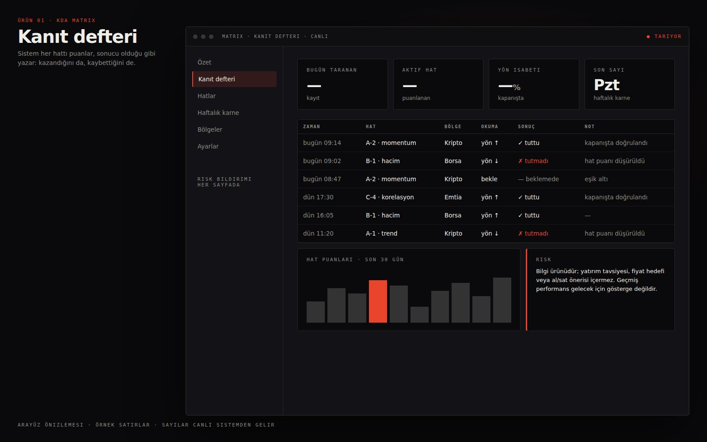

Arayüz önizlemesii · Otonom piyasa araştırma
KDA Matrix
Piyasayı sürekli tarayan, kendi okuma hatlarını puanlayan ve her sonucu açık bir kanıt defterine yazan sistem — kazandığını da, kaybettiğini de.
Ne yapar
- Binlerce fiyat hareketini tarar, hatları puanlar
- Her okumanın sonucunu kapanışta doğrular
- Haftalık karneyi bültene çevirir
Nasıl çalışır
- Veri toplanır ve hatlara dağıtılır
- Hat kararı kaydedilir, eşik altı beklemede kalır
- Kapanışta sonuç yazılır; hat puanı güncellenir
Canlı · kendi kullanımımızdaKanıt defterini aç